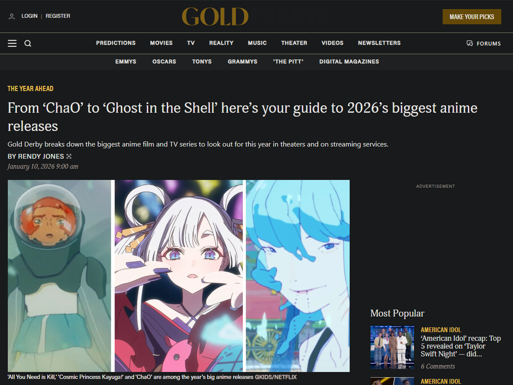
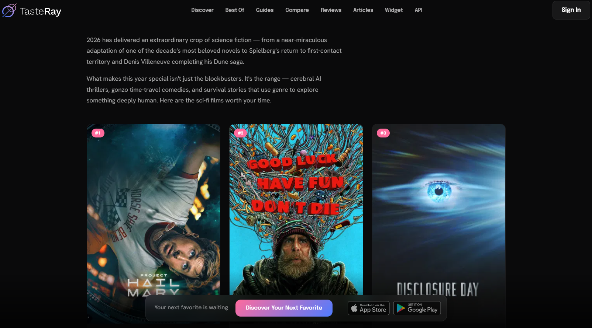
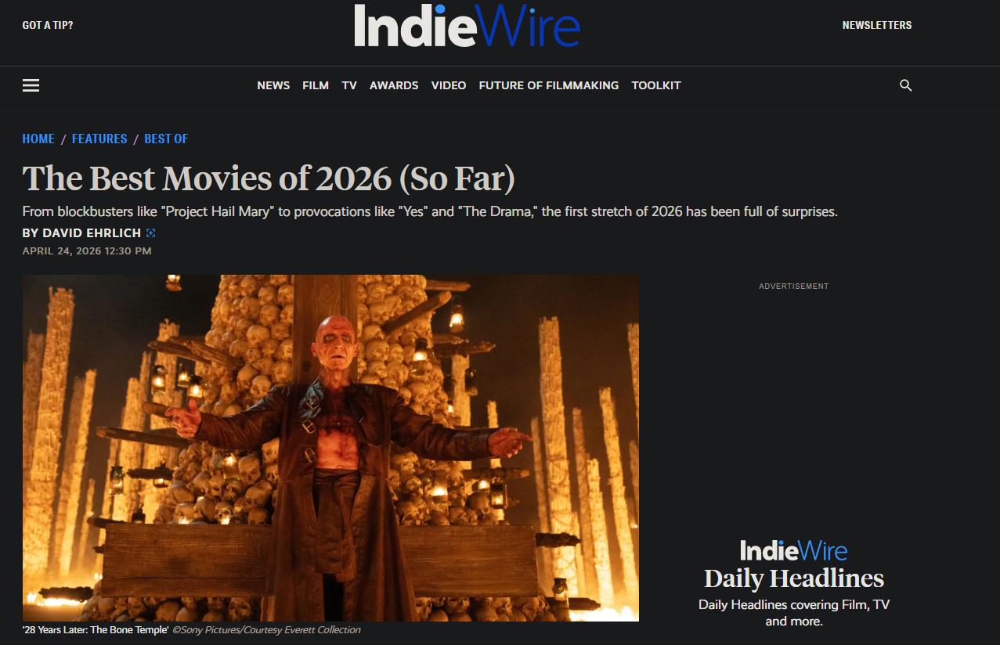

One of the highest Gold Derby - grossing movies globally and the highest-grossing anime film of all time, it plunges Tanjiro and the Hashira into a desperate battle against Upper Rank demons in a breathtaking final arc.

Ryan Gosling stars as a lone astronaut who wakes up millions of miles from Earth with no memory of how he got there — already the highest-grossing domestic release of 2026, earning every penny with a perfect balance of smarts and heart. TasteRay

A singular, hypnotic psychodrama starring Anne Hathaway and Michaela Coel, almost entirely confined to an unheated barn yet growing to feel as vast as the gap between literalness and metaphor. IndieWire